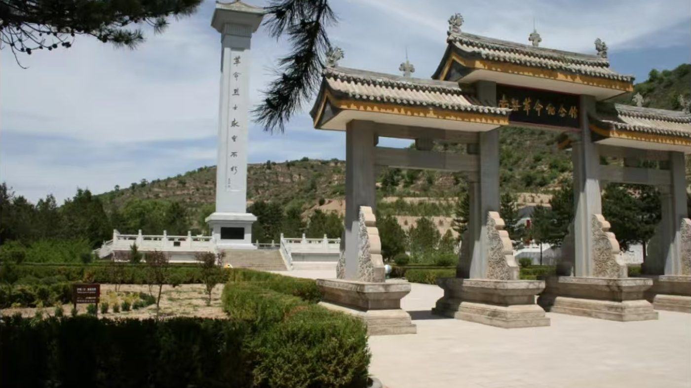
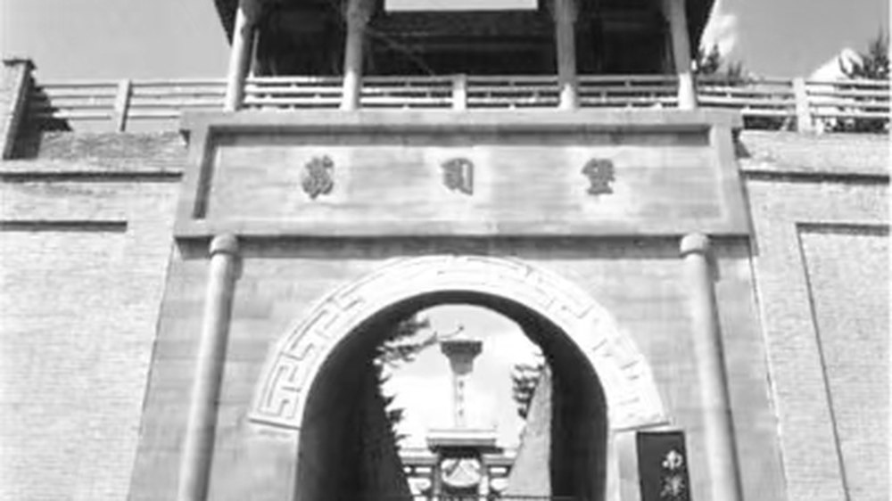
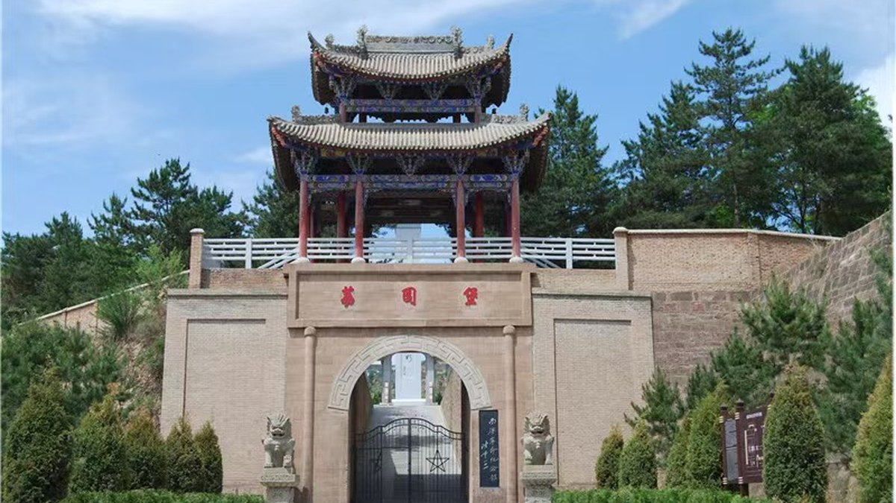
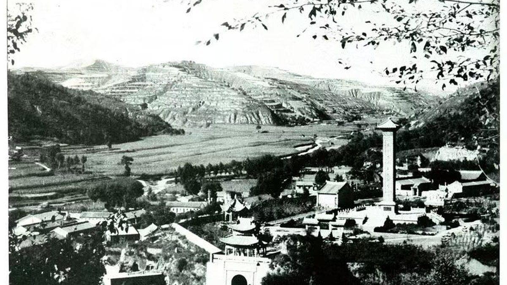
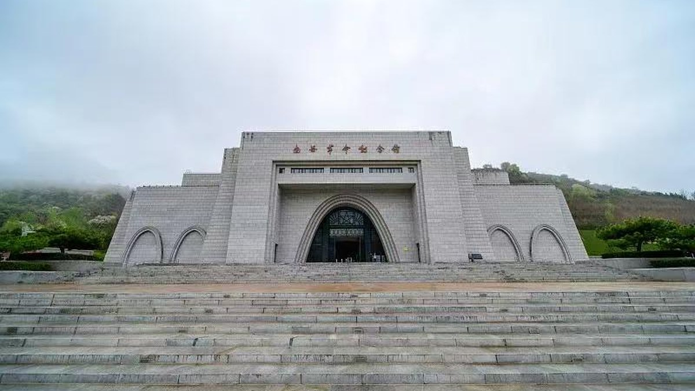

第 5 记 · 一盏灯
“面向群众、坚守信念、顾全大局、求实开拓。”南梁精神（甘肃组工网，2024-01-16）
列宁小学没有停在 1934 年。它改名、搬迁、合并、复办，一直办到今天。
列宁小学的九十余年
1937 年 3 月，列宁小学与白马庙普通小学合并，迁至白马庙；1947 年 3 月陇东战争爆发，学校停办，年龄小的学生疏散回家，年龄大的学生和教师随军参加革命工作；1948 年 9 月，学校在白马庙恢复办学。
此后学校历经多次改名和改建，“列宁”这个名字始终保留。1965 年办为完全小学，1970 年春办为七年制学校，1986 年甘肃省政府拨专款修缮。
当年的列宁小学，现已扩建成一所九年寄宿制学校。从三孔窑洞到标准教学楼，从 40 多名学生到上千名学生。
荔园堡古城
荔园堡古城旧址修筑于北宋治平年间（公元 1064—1067 年），城名由宋英宗钦赐。1934 年 11 月 7 日，陕甘边区苏维埃成立庆祝大会就在古城内举行。
古城主要由馆门、仿古式牌坊门、烈士纪念碑、英雄群雕、清音楼、陕甘边区苏维埃政府旧址和部委旧址七部分组成。清音楼原是古城里的戏楼，如今是纪念建筑群的一部分。
纪念馆与“两点一存”广场
南梁革命纪念馆讲述了以南梁为中心的陕甘边革命根据地对中国革命做出的巨大贡献。纪念馆由综合展厅和刘志丹、谢子长、习仲勋三个个人专题展厅组成，胡耀邦、陈云、习仲勋等先后为纪念馆题词。
纪念馆始建于 1986 年，占地面积 2 万平方米。参观线路上还有“两点一存”主题广场、列宁小学旧址、寨子湾陕甘边区苏维埃政府旧址、抗大七分校旧址、军民大生产纪念馆、阎洼子四十二烈士殉难处旧址。
精神的十六个字
土地革命战争时期，以刘志丹、谢子长、习仲勋等为代表的中国共产党人，领导人民创建了以南梁为中心的陕甘革命根据地，在血与火的斗争中铸就了“面向群众、坚守信念、顾全大局、求实开拓”的南梁精神。
2009 年，习近平同志视察南梁革命遗址时指出，要“大力传承南梁精神，使其发扬光大”。今天，南梁干部学院、陕甘苏区历史研究中心就设在这里。
今天的南梁
南梁镇如今是红色旅游小镇：纪念馆、干部学院、列宁学校、古城遗址集中在一处，来学习的人一批接一批。
而抗大七分校走出的那条线，通向今天的陆军边海防学院——一所学校变成一所军校，这是历史留下的最长的一条伏笔。


同一座城门：旧影与今天


同一座纪念馆：1986 与今天


纪念馆怎么讲南梁
南梁革命纪念馆 1986 年经中共甘肃省委、省政府批准，在荔园堡古城中修建，占地 40.32 亩；2009 年在老馆院内建成南梁革命历史陈列馆；2012 年启动新馆建设，2014 年 9 月 28 日陕甘边区苏维埃政府成立 80 周年时正式开馆。新馆占地 16.4 亩，展馆面积 7276.17 平方米，展陈面积 6426 平方米。
综合展厅分序厅、创建陕甘边根据地建立红二十六军、巩固和扩大“硕果仅存”的红色区域、红军长征落脚点与八路军抗日出发点、南梁精神光耀千秋、结束语六个部分，并突出九处展陈亮点：
- 刘志丹来南梁
- 红二十六军成立
- 包家寨会议
- 西华池大捷
- 陕甘边革命根据地示意图
- 陕甘边区苏维埃政府成立
- 南梁集市
- 刘志丹看望谢子长
- 迎接中央红军
另有刘志丹、谢子长、习仲勋三个个人专题展厅。纪念馆 2001 年被中宣部命名为全国爱国主义教育基地，2004 年列入全国百个红色旅游经典景区，2013 年确定为国家级文物保护单位，2015 年晋升国家 4A 级旅游景区并获鲁班奖，2025 年列入第七批国家级烈士纪念设施，现为国家二级博物馆。
你记住了几件事？
点开看答案——答辩时也可以拿这三题让评委试。
1934 年 11 月列宁小学迁到转咀子后，有几个教学班、多少学生？
3 个教学班、46 名学生、3 名教员。
1934 年 5 月，阎洼子遇害的共有多少人？
42 人：36 名红军游击队员、干部和群众被推入深坑，白阳珍等 6 名乡村干部被铡刀杀害。
抗大七分校在陇东最盛时，全校师生有多少人？
5200 多人，学员最小的 13 岁、最大的不过 20 岁。
九年寄宿制学校
列宁小学 90 余年沿革，校名保留至今
荔园堡古城
北宋治平年间筑城，1934.11.7 庆祝大会在此举行
纪念馆展厅
综合展厅 + 刘志丹、谢子长、习仲勋三个专题展厅
两点一存
参观线路上的主题广场
本页史实清单
- 列宁小学 90 余年沿革：合并、停办、复办、改名，校名保留
- 1965 年办为完全小学；1970 年办为七年制学校；1986 年省政府拨款修缮
- 今为九年寄宿制学校
- 荔园堡古城含馆门、牌坊门、烈士纪念碑、英雄群雕、清音楼、政府旧址、部委旧址七部分
- 纪念馆 1986 年始建，占地 2 万平方米，设综合展厅与三个专题展厅
- 2009 年，习近平同志视察南梁，提出传承南梁精神
资料来源：人民政协报《陕甘边区的第一所列宁小学》（2026-09-10）；华池县人民政府《红色南梁邀您来打卡！》（2023-05-05）；甘肃组工网《赓续南梁精神，走好新时代的群众路线》（2024-01-16）；中国共产党新闻网《华池县南梁革命纪念馆》